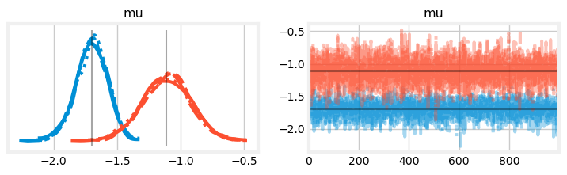

import numpy as np
import pandas as pd
import pymc as pm
import arviz as az
import pandas as pd
import matplotlib.pyplot as plt
from matplotlib.patches import Patch
SEED = 808
RNG = np.random.default_rng(SEED)
plt.style.use('fivethirtyeight')
plt.rcParams['axes.facecolor'] = 'white'
plt.rcParams['figure.facecolor'] = 'white'
def invlogit(x):
return 1 / (1 + np.exp(-x))
# read in the detection data
nh17 = pd.read_csv('detectionFreq.NH17.csv')
Y = nh17.to_numpy()
n, J = Y.shape
K = Y.max()
# convert the species names to ints
species_idx, lookup = nh17.index.factorize() # lookup[int] returns the actual name
# plot the detection frequencies
fig, ax = plt.subplots(figsize=(4, 6))
im = ax.imshow(Y[np.argsort(Y.sum(axis=1))], aspect='auto')
ax.set_ylabel('Species')
ax.set_xlabel('Site')
# add a legend
values = np.unique(Y.ravel())[1::2]
colors = [ im.cmap(im.norm(value)) for value in values]
patches = [ Patch(color=colors[i], label=f'{v}') for i, v in enumerate(values) ]
plt.legend(title='Detections', handles=patches, bbox_to_anchor=(1, 1), loc=2, borderaxespad=0.)
ax.grid(False)
plt.show()Community occupancy
Static community occupancy models in PyMC
In this notebook, I explore fitting community occupancy models in PyMC. Community occupancy models are a multi-species extension of standard occupancy models. The benefit of these models is that they estimate occupancy and detection better that single species models by treating each species as a random effect. Further, through data augmentation, they can estimate the richness of the supercommunity, that is, the total number of species that use the study area during the surveys.
US Breeding Bird Survey
As a motivating example, I use the breeding bird survey (BBS) data used by Dorazio and Royle (2005) and Royle and Dorazio (2008), Chapter 12. This is a \((n, J)\) matrix with the number of times each species was detected over \(K\) surveys, where \(n\) is the number of detected species and \(J\) is the number surveyed sites. In this example, \(n=99\) species were detected at the \(J=50\) sites over the \(K=11\) surveys in New Hampshire. The BBS occurs on routes across the US. This dataset represents one route.
Dorazio and Royle (2005) draw each species-level effect from a multivariate normal distribution, \[ {\alpha_i \choose \beta_i} \sim \text{Normal} \left( {\mu_{\,\text{detection}} \choose \mu_{\, \text{occupancy}}}, \; \mathbf{\Sigma} \right), \] where \(\alpha_i\) is the logit-scale probability of detection for species \(i=1,\dots,n\), \(\beta_i\) is the logit-scale probability of occurrence, \(\mu\) is the community-level average, and \(\mathbf{\Sigma}\) is the covariance matrix. We assume that there will be a positive correlation between occupancy and the probability of detection, since abundance is positively correlated with both.
Known \(N\)
First, I fit the the known \(N\) version of the model. The goal of this version is to estimate occurrence and detection for each species, without estimating species richness.
This notebook makes extensive use of the coords feature in PyMC. Coords makes it easier to incorporate the species-level effects via the multivariate normal. I use a \(\text{Normal}(0, 2)\) prior for both \(\mu\) parameters, and a LKJ Cholesky covariance prior for \(\mathbf{\Sigma}.\)
coords = {'process': ['detection', 'occurrence'],
'process_bis': ['detection', 'occurrence'],
'species': lookup}
with pm.Model(coords=coords) as known:
# priors for community-level means for detection and occurrence
mu = pm.Normal('mu', 0, 2, dims='process')
# prior for covariance matrix for occurrence and detection
chol, corr, stds = pm.LKJCholeskyCov(
"chol", n=2, eta=2.0, sd_dist=pm.Exponential.dist(1.0, shape=2)
)
cov = pm.Deterministic("cov", chol.dot(chol.T), dims=("process", "process_bis"))
# species-level occurrence and detection probabilities on logit-scale
ab = pm.MvNormal("ab", mu, chol=chol, dims=("species", "process"))
# probability of detection. newaxis allows for broadcasting
a = ab[:, 0][:, np.newaxis]
p = pm.Deterministic("p", pm.math.invlogit(a))
# probability of detection. newaxis allows for broadcasting
b = ab[:, 1][:, np.newaxis]
psi = pm.Deterministic("psi", pm.math.invlogit(b))
# likelihood
pm.ZeroInflatedBinomial('Y', p=p, psi=psi, n=K, observed=Y)
pm.model_to_graphviz(known)
with known:
known_idata = pm.sample()Auto-assigning NUTS sampler...
Initializing NUTS using jitter+adapt_diag...
Multiprocess sampling (4 chains in 4 jobs)
NUTS: [mu, chol, ab]
100.00% [8000/8000 00:43<00:00 Sampling 4 chains, 0 divergences]
/Users/philtpatton/miniforge3/envs/pymc/lib/python3.11/site-packages/pytensor/compile/function/types.py:970: RuntimeWarning: invalid value encountered in accumulate
self.vm()
Sampling 4 chains for 1_000 tune and 1_000 draw iterations (4_000 + 4_000 draws total) took 43 seconds.mu_hat_royle = [-1.11, -1.7]
az.plot_trace(known_idata, var_names=['mu'], figsize=(8,2),
lines=[("mu", {}, [mu_hat_royle])]);

samps = az.extract(known_idata, var_names='ab')
ab_mean = samps.mean(axis=2)
fig, ax = plt.subplots(figsize=(5,4))
ax.scatter(invlogit(ab_mean[:, 1]), invlogit(ab_mean[:, 0]), alpha=0.5)
ax.set_xlim((0, 1))
ax.set_xlabel('Occupancy probability')
ax.set_ylim((0, 0.8))
ax.set_ylabel('Detection probability')
plt.show()The estimates of the community-level means is quite close to the estimates from Royle and Dorazio (2008). We can visualize the species-level probabilities of detection and occupancy. Compare with Figure 12.3 in Royle and Dorazio (2008).
Unknown \(N\)
Next, I train the unknown \(N\) version of the model. Like many other notebooks in this series, it relies on augmenting the detection histories with all-zero histories. These represent the detection histories for species that may use the study site, but were not detected over the \(K=11\) surveys. I also augment the species names in the coords dict, such that we can still use the dims argument in the multivariate normal. Mirroring Royle and Dorazio (2008), I augment the history \(M - n\) all-zero histories, where \(M=250\) and \(n\) is the number of species detected during the survey.
Similar to the occupancy notebook, I use a CustomDist to model the augmented history. This accounts for the “row-level” zero-inflation, whereby we know that the species is included in the super community if it was detected along the BBS route. The only difference with this logp is that it uses a ZeroInflatedBinomial distribution under the hood, rather than a Bernoulli, and uses the parameter \(\Omega\) to account for the row-level inflation.
M = 250
all_zero_history = np.zeros((M - n, J))
Y_augmented = np.row_stack((Y, all_zero_history))
aug_names = [f'aug{i}' for i in np.arange(M - n)]
spp_aug = np.concatenate((lookup, aug_names))
coords = {'process': ['detection', 'occurrence'],
'process_bis': ['detection', 'occurrence'],
'species_aug': spp_aug}
def logp(x, psi, n, p, omega):
'''A zero-inflated, zero-inflated model.'''
rv = pm.ZeroInflatedBinomial.dist(psi=psi, n=n, p=p)
lp = pm.logp(rv, x)
lp_sum = lp.sum(axis=1)
lp_exp = pm.math.exp(lp_sum)
res = pm.math.switch(
x.sum(axis=1) > 0,
lp_exp * omega,
lp_exp * omega + (1 - omega)
)
return pm.math.log(res)
with pm.Model(coords=coords) as unknown:
# priors for inclusion
omega = pm.Uniform('omega', 0, 1)
# priors for community-level means for detection and occurrence
mu = pm.Normal('mu', 0, 2, dims='process')
# prior for covariance matrix for occurrence and detection
chol, corr, stds = pm.LKJCholeskyCov(
"chol", n=2, eta=2.0, sd_dist=pm.Exponential.dist(1.0, shape=2)
)
cov = pm.Deterministic("cov", chol.dot(chol.T), dims=("process", "process_bis"))
# species-level occurrence and detection probabilities on logit-scale
ab = pm.MvNormal("ab", mu, chol=chol, dims=("species_aug", "process"))
# probability of detection
a = ab[:, 0]
p = pm.Deterministic("p", pm.math.invlogit(a))
# probability of occurrence
b = ab[:, 1]
psi = pm.Deterministic("psi", pm.math.invlogit(b))
# likelihood
pm.CustomDist(
'Y',
psi[:, np.newaxis],
K,
p[:, np.newaxis],
omega,
logp=logp,
observed=Y_augmented
)
pm.model_to_graphviz(unknown)with unknown:
unknown_idata = pm.sample()Auto-assigning NUTS sampler...
Initializing NUTS using jitter+adapt_diag...
Multiprocess sampling (4 chains in 4 jobs)
NUTS: [omega, mu, chol, ab]
100.00% [8000/8000 03:15<00:00 Sampling 4 chains, 0 divergences]
Sampling 4 chains for 1_000 tune and 1_000 draw iterations (4_000 + 4_000 draws total) took 196 seconds.
The rhat statistic is larger than 1.01 for some parameters. This indicates problems during sampling. See https://arxiv.org/abs/1903.08008 for details
The effective sample size per chain is smaller than 100 for some parameters. A higher number is needed for reliable rhat and ess computation. See https://arxiv.org/abs/1903.08008 for detailsomega_hat_royle = [0.55]
az.plot_trace(unknown_idata, var_names=['omega'], figsize=(8,2),
lines=[("omega", {}, [omega_hat_royle])]);I can plot the posterior distribution of species richness \(N.\) This is slightly more complicated than before sinc there is an additional level of zero-inflation (included and never detected or not-included) in this model compared to the occupancy model (present and never detection or not present).
# relevant posterior samples
post = az.extract(unknown_idata)
o_samps = post.omega.to_numpy()
psi_samps = post.psi.to_numpy()[n:, :]
p_samps = post.p.to_numpy()[n:, :]
# probability that the animal was never detected during the survey if present
p_not_detected = (1 - p_samps) ** K
# probability of a zero detection history
p_zero_hist = psi_samps * p_not_detected + (1 - psi_samps)
# probability that the species was included in the given the all-zero history
p_included = (o_samps * p_zero_hist ** J) / (o_samps * p_zero_hist ** J + (1 - o_samps))
# posterior samples of N
number_undetected = RNG.binomial(1, p_included).sum(axis=0)
N_samps = n + number_undetected
p_samps.shape
# posterior distribution
# N_hat_royle = 138
# fig, ax = plt.subplots(figsize=(6, 4))
# ax.hist(N_samps, edgecolor='white', bins=25)
# ax.set_xlabel('Species richness $N$')
# ax.set_ylabel('Posterior samples')
# ax.axvline(N_hat_royle, linestyle='--', color='C1')
# ax.axvline(N_samps.mean(), linestyle='--', color='C2')
# plt.show()(151, 1, 4000)Puerto Rican Birds
Next, I pivot to an example from southwestern Puerto Rico. Irizarry (2012) conducted community-level detection/non-detection surveys of bird species across \(J=128\) sites. The sites were stratified across four landuses: Agricultural, Forested, Urbanized, and Edge, the latter being located within and between to forest reserves. Irizarry (2012) conducted \(K=6\) surveys in the breeding seasons of 2010 and 2011. For demonstration, I assume a constant detection probability across surveys and closure between the two seasons. That is, I assume that there was no site-level colonization or extinction.
# read in a subset of the pr birds data
cols = ['STATION ID', 'Agricultural', 'ForestSource', 'Forested', 'Urbanized', 'SPECIES',
'Breed1-1', 'Breed1-2', 'Breed1-3', 'Breed2-1', 'Breed2-2', 'Breed2-3']
prbirds = pd.read_csv('prbirds.csv')[cols]
# rename the columns and remove all NA rows
prbirds.columns = ['site', 'agriculture', 'edge', 'forest', 'urban', 'species',
'y1', 'y2', 'y3', 'y4', 'y5', 'y6']
prbirds = prbirds.loc[~prbirds.isna().all(axis=1)]
landuse = ['agriculture', 'edge', 'forest', 'urban']
_, landuse_idx = prbirds[landuse].to_numpy().nonzero()
prbirds['landuse_idx'] = landuse_idx
# convert species names to int
species_idx, species_lookup = prbirds.species.factorize()
prbirds['species_idx'] = species_idx
# convert site names to int
site_idx, site_lookup = prbirds.site.factorize()
prbirds['site_idx'] = site_idx
# aggregate the detection data
Y = prbirds[['y1', 'y2', 'y3', 'y4', 'y5', 'y6']].sum(axis=1)
prbirds['Y'] = YSimilar to above, I can plot the detection frequencies for each species at each site, this time stratified by landuse. This plot is not as long as the detection frequency plot for the BBS route, highlighting the fact that Puerto Rico, like all islands, has lower species richness than similar sites on the continent.
# number of detections at each site for each species
sort_order = prbirds.loc[landuse_idx==0].groupby('species_idx').Y.sum().sort_values(ascending=False).index
cells = prbirds.pivot(index='species_idx', columns='site_idx', values='Y').to_numpy()
# plot the heat map
fig, ax = plt.subplots(figsize=(10, 5))
im = ax.imshow(cells)
# add a legend
values = np.unique(cells.ravel())
colors = [ im.cmap(im.norm(value)) for value in values]
patches = [ Patch(color=colors[i], label=f'{i}') for i in range(len(values)) ]
plt.legend(title='Detections', handles=patches, bbox_to_anchor=(1, 1), loc=2, borderaxespad=0.)
# edit the x-axis to go by landuse
loc = prbirds[['site_idx', 'landuse_idx']].drop_duplicates().groupby('landuse_idx').count().cumsum()
vlines = loc.to_numpy().flat[:-1] - 0.5
[ax.axvline(v, color='white', linewidth=1.5) for v in vlines]
ax.set_xticks(loc.to_numpy().flat[:-1])
# label each landuse
ax.text(15, 0 - 1, 'Agriculture', va='bottom', ha='center', fontsize=14)
ax.text(49, 0 - 1, 'Edge', va='bottom', ha='center', fontsize=14)
ax.text(83, 0 - 1, 'Forest', va='bottom', ha='center', fontsize=14)
ax.text(113, 0 - 1, 'Urban', va='bottom', ha='center', fontsize=14)
# label each axis
ax.set_xlabel('Site', fontsize=14)
ax.set_ylabel('Species', fontsize=14)
# plot an example species
example = 38
bounding_box = dict(boxstyle='round', facecolor='white', edgecolor='white', linewidth=3)
# ax.text(28, example, species_lookup[example], va='center', ha='right', bbox=bounding_box)
ax.annotate(species_lookup[example], (29.5, example), (20, example), ha='center', va='center',
bbox=bounding_box, fontsize=12,
arrowprops=dict(facecolor='white', edgecolor='white', linewidth=1))
ax.grid(False)
plt.show()As you can see, there is a clear delineation among habitats in terms of species-level detection histories. For example, the Puerto Rican Bullfinch (PUEB) is commonly seen in edge and, to a lesser extent, forested sites, yet is rarely seen in agricultural and urban sites.
Like the BBS model, I start with the known \(N\) version of the model. Unlike the BBS model, however, I do not assume a correlation between occurrence and detection. Instead, I assume that the species-level detection and occurrence parameters are drawn from independent normal distributions. To account for differences in occurrence among land uses, I use the dims argument in PyMC to generate a \((n_s, n_l)\) matrix of \(\beta\) parameters, where \(n_s\) is the number of species and \(n_l\) is the number of landuses. Each landuse has it’s own community level mean \(\mu_{\beta}\) and standard deviation \(\sigma_{\beta}.\)
coords = {'landuse': ['agriculture', 'edge', 'forest', 'urban'],
'species': species_lookup.to_numpy()}
with pm.Model(coords=coords) as pr:
# detection process priors
mu_a = pm.Normal("mu_a", 0, 2)
sigma_a = pm.Exponential("sigma_a", 1)
alpha = pm.Normal("alpha", mu=mu_a, sigma=sigma_a, dims="species")
# linear model
p = pm.Deterministic("p", pm.math.invlogit(alpha[species_idx]))
# occurrence process priors
mu_b = pm.Normal("mu_b", 0, 2, dims='landuse')
sigma_b = pm.Exponential("sigma_b", 1, dims='landuse')
beta = pm.Normal("beta", mu=mu_b, sigma=sigma_b, dims=('species', 'landuse'))
# linear model
psi = pm.Deterministic("psi", pm.math.invlogit(beta[species_idx, landuse_idx]))
# likelihood
pm.ZeroInflatedBinomial('y', p=p, psi=psi, n=K, observed=Y)
pm.model_to_graphviz(pr)
with pr:
pr_idata = pm.sample()Auto-assigning NUTS sampler...
Initializing NUTS using jitter+adapt_diag...
Multiprocess sampling (4 chains in 4 jobs)
NUTS: [mu_a, sigma_a, alpha, mu_b, sigma_b, beta]
100.00% [8000/8000 01:50<00:00 Sampling 4 chains, 0 divergences]
Sampling 4 chains for 1_000 tune and 1_000 draw iterations (4_000 + 4_000 draws total) took 110 seconds.az.summary(pr_idata, var_names=['mu_a', 'sigma_a', 'mu_b', 'sigma_b'])| mean | sd | hdi_3% | hdi_97% | mcse_mean | mcse_sd | ess_bulk | ess_tail | r_hat | |
|---|---|---|---|---|---|---|---|---|---|
| mu_a | -2.054 | 0.169 | -2.367 | -1.736 | 0.003 | 0.002 | 3181.0 | 2952.0 | 1.00 |
| sigma_a | 1.145 | 0.141 | 0.885 | 1.407 | 0.003 | 0.002 | 1749.0 | 2238.0 | 1.00 |
| mu_b[agriculture] | -0.696 | 0.395 | -1.452 | 0.038 | 0.008 | 0.006 | 2559.0 | 2330.0 | 1.00 |
| mu_b[edge] | 0.369 | 0.417 | -0.375 | 1.188 | 0.010 | 0.008 | 1779.0 | 2112.0 | 1.00 |
| mu_b[forest] | 0.171 | 0.558 | -0.926 | 1.179 | 0.011 | 0.009 | 2478.0 | 2748.0 | 1.00 |
| mu_b[urban] | -0.480 | 0.405 | -1.219 | 0.313 | 0.008 | 0.006 | 2775.0 | 2485.0 | 1.00 |
| sigma_b[agriculture] | 2.524 | 0.387 | 1.842 | 3.254 | 0.012 | 0.009 | 1074.0 | 2062.0 | 1.01 |
| sigma_b[edge] | 2.540 | 0.370 | 1.927 | 3.281 | 0.012 | 0.009 | 945.0 | 1473.0 | 1.00 |
| sigma_b[forest] | 3.624 | 0.605 | 2.533 | 4.771 | 0.022 | 0.016 | 816.0 | 1230.0 | 1.00 |
| sigma_b[urban] | 2.602 | 0.405 | 1.857 | 3.341 | 0.013 | 0.009 | 1118.0 | 1426.0 | 1.00 |
ax = az.plot_trace(pr_idata, combined=False, legend=True, figsize=(10,8),
var_names=['mu_a', 'sigma_a', 'mu_b', 'sigma_b'])
ax[0,0].legend()
ax[2,0].legend()
plt.show()The trace plots indicate that the average occurrence probability is higher in forest and edge points than in agricultural or urban points. There also seems to be higher variance among species in forest sites.
I can also plot the probability of occurrence for each species across habitats. Note that the pattern seen in the detection frequency plot, namely, that Puerto Rican Bullfinches like trees, is reflected in the occupancy probability plots.
colors = plt.rcParams['axes.prop_cycle'].by_key()['color'][:4]
# go back to the matplotlib default for this plot
plt.style.use('default')
def invlogit(x):
return 1 / (1 + np.exp(-x))
# posterior samples
betas = az.extract(pr_idata, var_names='beta')
psis = invlogit(betas)
psi_mean = psis.mean(axis=2)
interval = np.quantile(psis, [0.1, 0.9], axis=2)
# make the figure
fig, axs = plt.subplots(10, 5, tight_layout=True, sharey=True, sharex=True, figsize=(8, 11))
axx = axs.flatten()
for i in range(50):
# means and error bars
y = coords['landuse']
x = psi_mean[i]
err = interval[:, i, :]
# means and error bars
axx[i].scatter(x, y, marker='.', color=colors)
axx[i].hlines(y, err[0], err[1], color=colors)
axx[i].set_title(species_lookup[i], fontsize=10)
axx[i].set_xticks([0, 0.5, 1])
axx[i].set_xticklabels(['0', '', '1'])
axx[i].spines.top.set_visible(False)
axx[i].spines.right.set_visible(False)
plt.show()References
Dorazio, Robert M, and J Andrew Royle. 2005. “Estimating Size and Composition of Biological Communities by Modeling the Occurrence of Species.” Journal of the American Statistical Association 100 (470): 389–98.
Irizarry, Julissa Ivelisse. 2012. “Patch Dynamics and Permeability of Fragmented in Southwestern Puerto Rico.” PhD thesis, North Carolina State University.
Royle, J Andrew, and Robert M Dorazio. 2008. Hierarchical Modeling and Inference in Ecology: The Analysis of Data from Populations, Metapopulations and Communities. Elsevier.